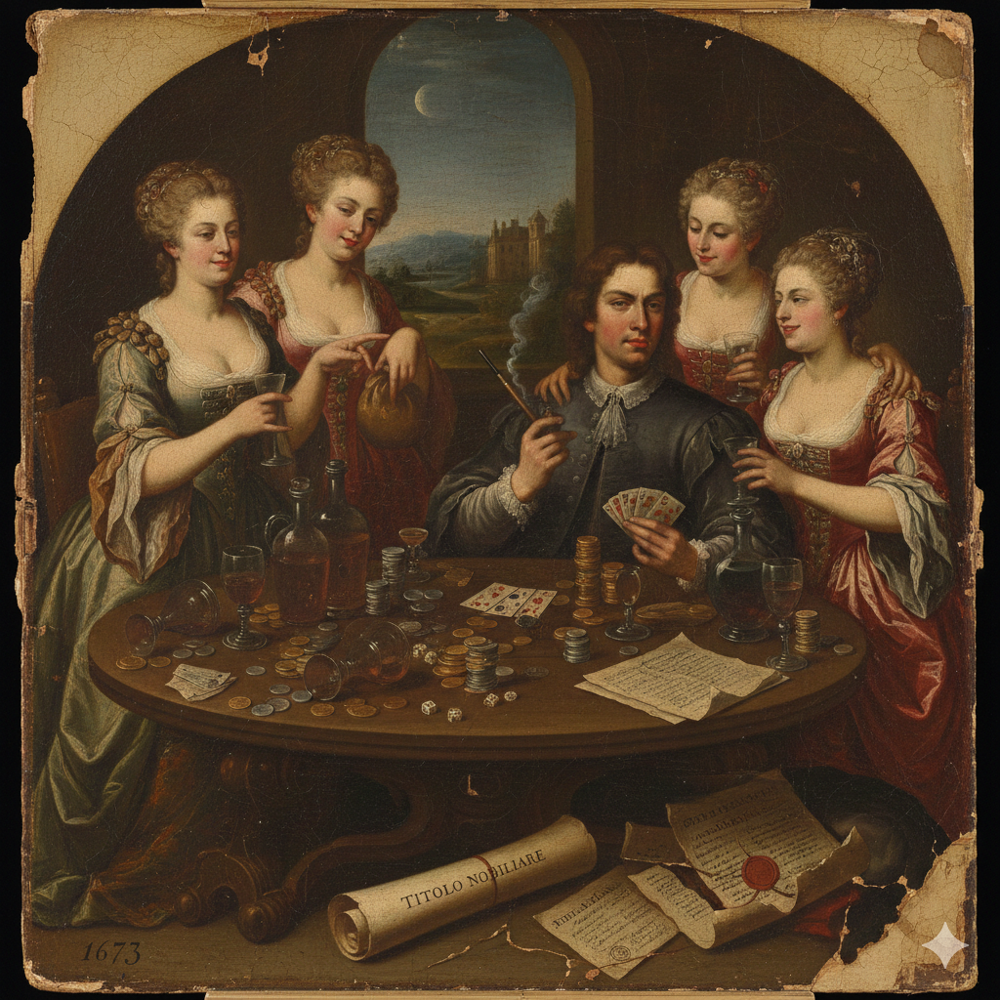

La Storia: Una Stirpe tra Gloria e Oblio
Il Segreto del 1673
Esistono leggende che si tramandano sottovoce, tra realtà e fantasia. Si narra che nel 1673, l’ultimo dei Conti Nicoli — un uomo dai grandi possedimenti ma dai vizi altrettanto smisurati — si giocò l'intero patrimonio in una sola notte. Titolo, palazzi e onore svanirono tra le carte, il tabacco e il vino.
Da allora, le tracce del Conte si persero, ma la nostra stirpe non abbandonò mai questa terra. Per secoli, i Nicoli hanno continuato a curare i terreni di Negrar e della pianura veronese, lavorando con umiltà le terre che un tempo portavano il nostro nome. Il silenzio è calato sulla nostra origine, un silenzio imposto per coprire la vergogna di quell'onore perduto.

Ma il legame con la storia è profondo. Non si esclude che le radici della nostra famiglia possano risalire ancora più lontano, fino ai tempi della Villa Romana di Negrar che oggi riaffiora dalla terra: sebbene non vi siano tracce scritte, il nostro sangue batte al ritmo di quei mosaici millenari.